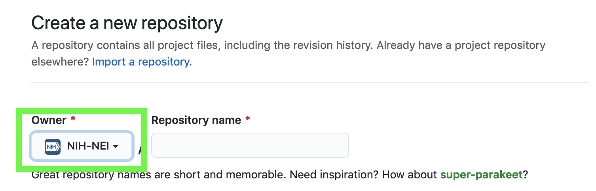

GitHub Quickstart Guide#
See also
For more in-depth questions, see:
General#
How Do I Get Access to the NIH-NEI GitHub Organization?#
If you don’t already have an existing GitHub account (or if you don’t want to use your personal one), you will need to create one. Next, you can request access to the organization by submitting a ticket to the IT service desk. In the ticket, include your GitHub username, a brief justification for the request, and your supervisor.
Do I login with my GitHub or NIH credentials?#
You use both. You first log in with your GitHub credentials. Then you will log in with your NIH credentials once you visit a page within the NEI GitHub organization.
How Do I Create a Repository?#
GitHub has created a helpful tutorial, which will help you get started. Be sure to set the owner to NIH-NEI to make the repo part of the organization like in the image featured below:
What Should I Put into a Repository?#
Repositories are for code, documentation, and small sample data. You should not include full datasets or any PHI/PII in a repository.
Management and Sharing#
Why Don’t I Have Permissions to Do Certain Tasks?#
You will need to submit a ticket to the IT service desk to do the following:
Make a repository public (include repo URL, justification, and supervisor name in request)
Create a team (include team name, team description, and supervisor name in request)
Delete/archive a repo (include repo URL, justification, and supervisor name in request)
What Application(s) Should I Use to Manage My Repos?#
Tip
If you are new to Git and GitHub, you should try GitHub Desktop. Installing this requires help from an administrator via a service desk ticket, but the application is approved (white listed) for installation at NEI.
If you use… |
…then consider using this |
|---|---|
RStudio |
|
VS Code |
|
Atom |
Licensing#
What License Should I Use?#
NEI employees are encouraged to use this modified BSD 3-clause license. It should be included in the top level directory of your repository in a file called LICENSE. You will need to edit the AUTHORS and the SOFTWARE section.
I’ve Modified Code with an Existing Open Source License. How Should I Distribute It?#
It depends on the license. In the case of a GPL license, the code would still be covered by the GPL, although your modifications would not be copyrighted. Other open source licenses allow you to redistribute code under a different license. You should contact the Technology Development Coordinator if you have additional questions.
How Do I Handle Third-Party Contributions?#
If you accept any third-party contributions from individuals outside of the NIH, their changes should be licensed with an unmodified BSD 3-clause license. This license should be included in the top level directory of your repository in a file called LICENSE.BSD-3-Clause. You should also include this CONTRIBUTING file to inform contributors that their contributions will be licensed under a BSD 3-clause license. You are free to include additional contribution guidelines in this file (e.g. coding styles).